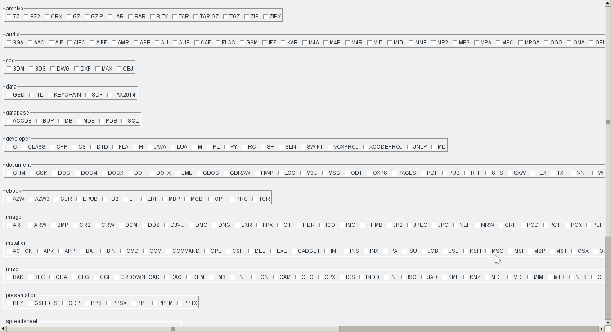
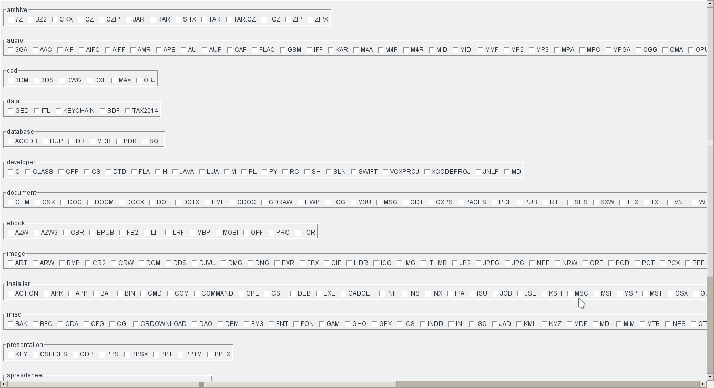

How it works
Sorter makes file organisation and management easier. With just a few mouse clicks, you can organise several files in the most convenient manner possible.
It simply helps you organise several files that contain similar characteristics into a single folder. You can put all letters documents into one folder, all images with the word home into another, all music by one artist in yet another folder, etc.
Sorter organises these files into folders which are grouped according to one or more of the following patterns:
- A common name in multiple files' names. For example, multiple files may have a common word(s) season one. Every file bearing these word(s) will be moved to (by default) a folder named season one.
- A custom name (of your choosing). For example, after searching using the above criteria, you might choose the destination folder to be named My Series.
- By file type/format. For instance, pdf files will be put in a folder named PDF, docx files in a DOCX folder, jpeg files in a JPEG folder, etc.
- By categories of the file formats. For instance, pdf, docx and txt files are all documents, hence will be put in a folder named document. These categories are defined in filegroups
PS: Sorter majorly focuses on file management but most of these operations should generally apply to folders too.
Download


How to use
- Tap or click image to enlarge
Launch Sorter
{kind=link}
{kind=link}
Choose Source folder.
This is the folder in which files should be organised.
File organisation of the chosen source folder.

Select any (or all) option(s):
- Search for - Enter the word to search for in the ajdacent box. Only files with names containing this word will be organised/Sorted.
- Group into folder - Enter the name in the adjacent box. Files matching the search criteria will be moved to a folder bearing this name.
- Group by file type - Group the files into category-named folders of audio, video, etc
- Look into subfolders - Check inside folders and their subfolders for any files and organises them in accordance with the search criteria.
- Select file types - Select specific file types/format to be organised/sorted
- Perform cleanup - Remove empty folders after sorting. (Recommended: leave this option as is)
 

{kind=link}
Types Window: Select any file type, or leave as is.
Resulting Folder
{kind=link}
{kind=link}
Resulting folder structure - items grouped by type
Resulting folder structure - subfolder contents
{kind=link}
Issues?
Notify us here.